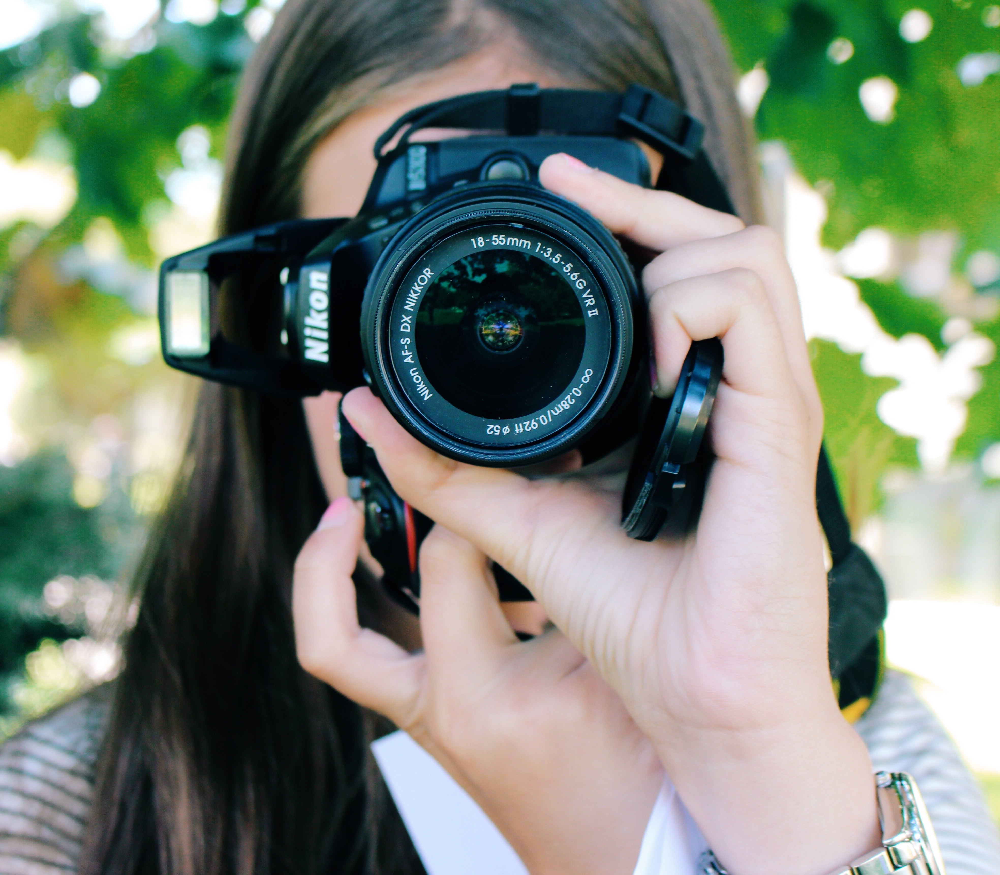

Lets Take Great Pictures!
So you’ve got yourself a new DSLR camera! Congratulations, there’s a whole world of photography possibilities about to open up to you. But you might be wondering, as you open up the box and check out the lengthy how-to manual, exactly how best to go about getting the best (the most?) from your new camera.
Well, I’m here to help! I’ve been shooting with a DSLR camera since I was thirteen years old, starting with a Nikon D5300 camera.
Here, I am going to break down in simple terms how to shoot in manual mode on a DSLR camera. While you can use automatic settings, such as auto, aperture or shutter speed priority, portrait or landscape, most advanced photographers use manual shooting mode in order to have the most control over their photographs. By using manual mode, a whole new level of possibilities will open up for you.
